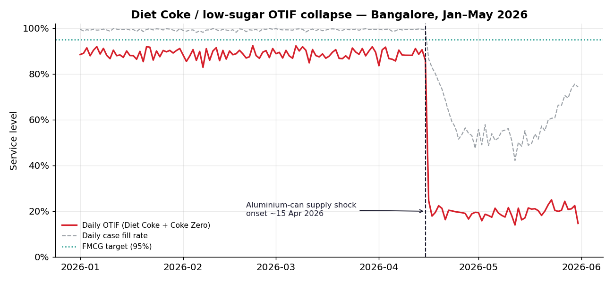
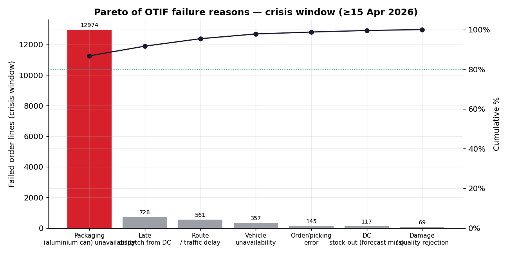
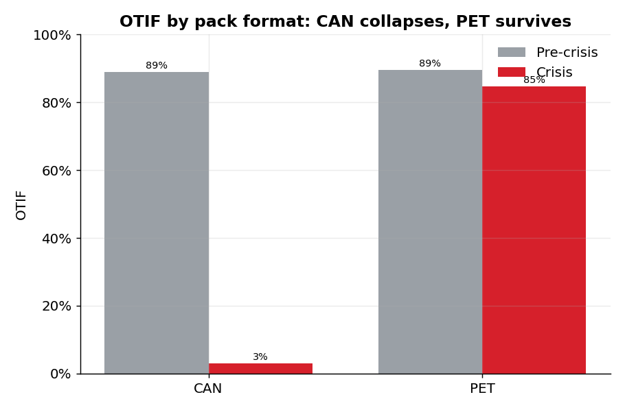
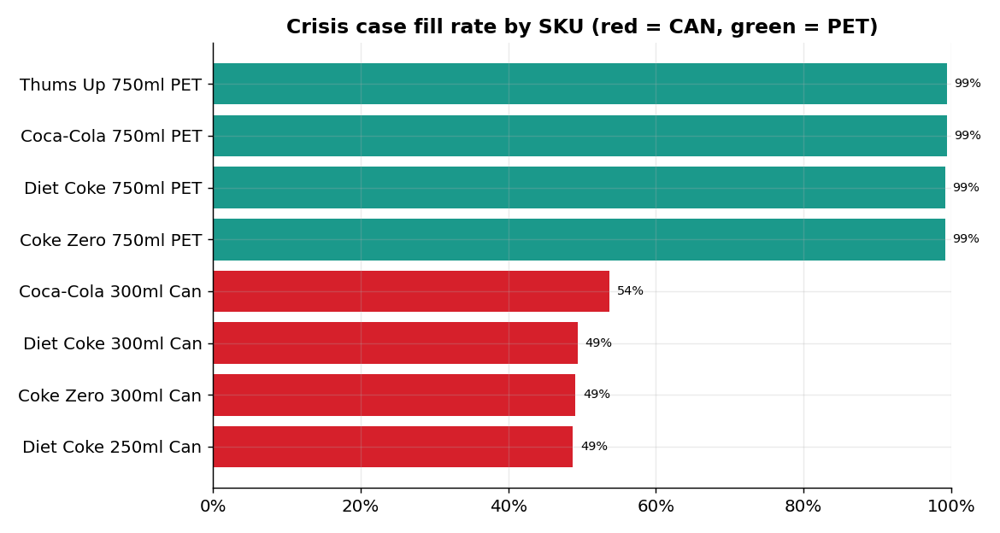
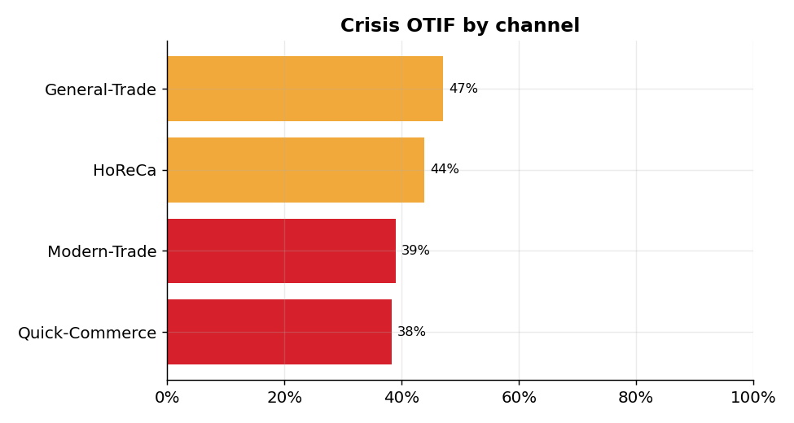
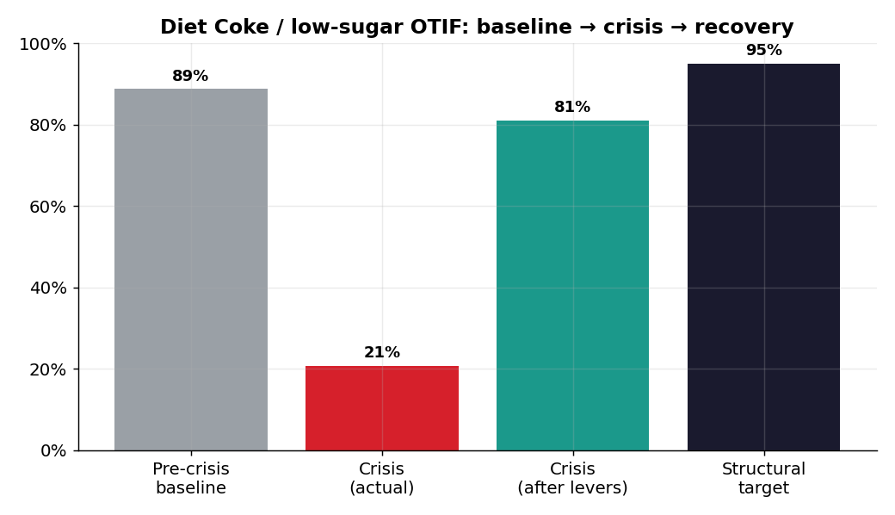
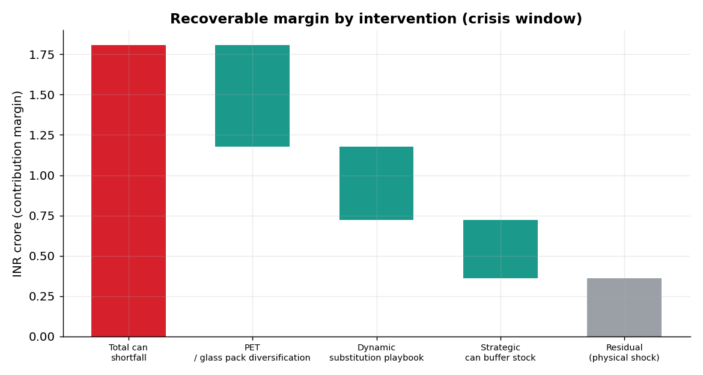
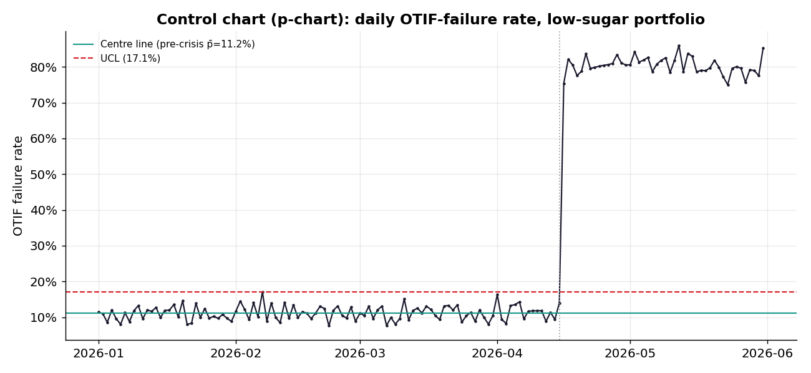

Analysis of the real April-2026 aluminium-can shortage that collapsed Diet Coke distribution in Bengaluru. Transactional data is a transparent, benchmark-calibrated simulation of a real, cited event.
Stable ~89% for Q1, then a sharp, sustained drop from the 15-Apr can-supply shock.

Pareto of crisis failure reasons.

CAN 3% vs PET 85% (χ²=17,623, p<0.001).

Every CAN SKU collapses; every PET SKU holds.

Quick-commerce & modern trade hit hardest.

Baseline → crisis → after interventions → target.

80% of the controllable loss, by lever.

p-chart of daily OTIF-failure rate; 46 days out of control during the crisis.

| # | Intervention | RICE | Recovers | Effort |
|---|---|---|---|---|
| 1 | Dynamic substitution playbook (auto-offer Coke Zero PET when can OOS) | 28.8 | ₹0.45 cr | Low |
| 2 | Pack-format diversification (Diet Coke 750ml PET + 250ml glass) | 10.1 | ₹0.63 cr | Medium |
| 3 | Can buffer (4–6 wk) + qualified 2nd supplier + early-warning index | 6.5 | ₹0.36 cr | Med-High |
docs/references.md. The order-line dataset is a calibrated simulation — not real Coca-Cola data.
Method conclusions are robust; absolute rupee figures are illustrative.